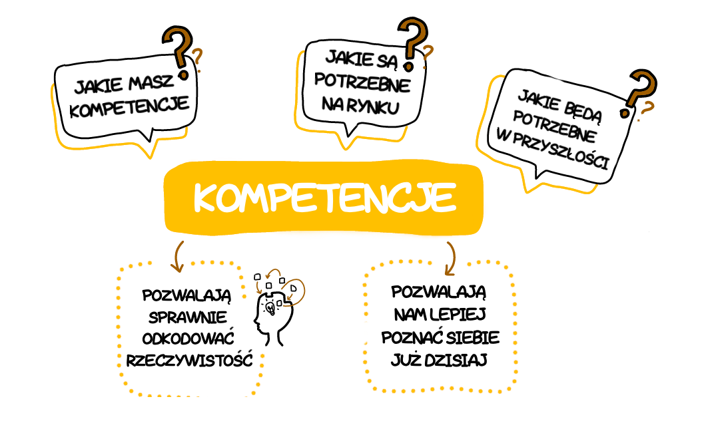

Kompetencje
Jutra
czyli czego rzeczywistość
będzie wymagać
od naszych dzieci
będzie wymagać
od naszych dzieci
Dlaczego warto przeczytać tę książkę
...napisać, że dążenie człowieka do pojęcia przyszłości jest siłą napędową wszechświata, to jakby nic nie pisać. Ale to dążenie, nawet próbowanie po omacku, ma jedną niepodważalną zaletę – pozwala nam lepiej poznać siebie już dzisiaj. Stajemy się odkrywcami nie świata, a samych siebie. Każdy z nas może być swoim osobistym Krzysztofem Kolumbem czy Neilem Armstrongiem…
...dlaczego tematyka przyszłości jest tak interesująca? Niewiadoma od zawsze frapowała człowieka. Ludzka wyobraźnia pozwala pojąć zjawiska, które jeszcze się nie wydarzyły. Dzięki niej tworzymy niemal realne modele przyszłej rzeczywistości. Ale scenariuszy jest nieskończenie wiele. A my chcemy wiedzieć dokładnie, jak będzie jutro, pojutrze, za rok...

...do czego służą kompetencje?
Do rozwiązywania problemów, które każdego dnia napotykamy na swojej drodze – zarównow życiu osobistym, jak i zawodowym. A kompetencje przyszłości to takie, które umożliwią nam rozwiązywanie przyszłych problemów...
Do rozwiązywania problemów, które każdego dnia napotykamy na swojej drodze – zarównow życiu osobistym, jak i zawodowym. A kompetencje przyszłości to takie, które umożliwią nam rozwiązywanie przyszłych problemów...
...raz nabyte kompetencje nie wystarczają na całe życie. Nie ma kompetencji nieużytecznych, a wszystkie są ze sobą powiązane, wzajemnie na siebie oddziałują i podlegają ciągłej ewolucji...
Kilka słów o autorze
Co o Kompetencjach Jutra sądzą inni?
Ta książka – tak naprawdę – nie daje prostych i oczywistych odpowiedzi. Pokaże Wam świat z wielu perspektyw i każe zastanowić się nad tym, jak bardzo zgadzacie się z wizją wyzwań, przed którymi stoi współczesne młode pokolenie. Czytając będziecie się zastanawiać, czy właśnie tak będzie wyglądała nasza przyszłość i niezbędne kompetencje. Możecie się z tą wizją nie zgadzać, ale nie zaprzeczycie, że dysponując opisanymi kompetencjami przyszłości poradzicie sobie w czasach rewolucji 4.0. I każdej kolejnej też.
dr hab. Mariusz Kicia,
Wydział Ekonomiczny UMCS
Dobra książka to taka, która pobudza do myślenia o ważnych sprawach, poszerza horyzonty i pozwala naszym myślom wzbić się wyżej. Każdego dnia tysiące innowatorów na uniwersytetach, w małych startupach i wielkich korporacjach pracuje nad innowacjami, które zmieniają nasz świat. Niektóre być może wywrócą go do góry nogami. Próba zrozumienia tych zmian, ich wpływu na świat otaczający mnie i moich najbliższych oraz przygotowania się na nie jest ważna. Trzymacie w ręku dobrą książkę. Książkę, która może Wam w tym pomóc.
Robert Ługowski,
Partner Zarządzający,
Cobin Angels
Teraz, jak nigdy wcześniej, zagadnienia związane z kompetencjami stają się kluczowe. Kluczowe jest nawet nie tyle to, jakie kompetencje powinno się mieć, ale raczej jak je zdobywać. Zrozumienie sposobów zdobywania i selekcji informacji oraz wiedzy, a także niezwykła sztuka oduczania się starych nawyków – jako kompetencje są uniwersalne i „adekwatne" w dzisiejszym i przyszłym świecie. W tej książce znajdą Państwo wiele przemyśleń na ten temat. To bardzo istotne kwestie dla liderów organizacji oraz firm, ale i dla rodziców oraz, miejmy nadzieję, również niektórych nastolatków. Warto znać zasady gry, zanim się wejdzie na boisko dorosłego życia. Autor stara się je w tej książce opisać i przybliżyć. Z dobrym skutkiem!